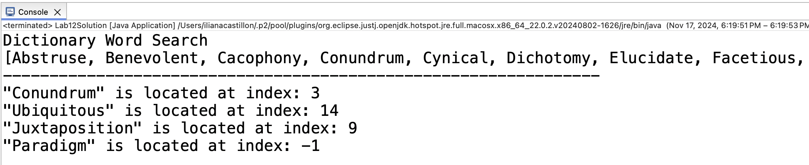

Lab 12: Binary Search 📖
Due Date and Submission Requirements
- Due Date: Thursday, November 21st at 11:59 p.m.
- Partner Information: This is an individual assignment. You are allowed to collaborate with other students, but each student must submit their individual, independent solution.
- Submission Instructions: Submit your Lab12Demo.java file to the appropriate D2L dropbox.
The goal of this lab is:
- Implement binary search in java
Background Information
Binary search (as discussed in class on Monday, November 18th) is an efficient searching algorithm used for looking up information in a sorted collection.
For example, imagine flipping through a dictionary to find a word. Instead of starting at page one and working forward, you would likely open the book near the middle,
check if the word comes before or after that point, and repeat the process with the appropriate half of the dictionary. This method drastically reduces the number of pages
you need to flip. In binary search, this "halving" strategy is what gives it its O(logN) efficiency.
Directions
Using Lab12Demo.java as a starting point, you will implement binary search by filling in the body of the binary_search method.
You cannot modify anything in the main() method or add any other methods.
If the middle element is alphabetically smaller than the target value (word you're searching for),
you eliminate the left half of the array, and recalculate the mid point. If the middle value is alphabetically greater than the target value, you eliminate the right half of the array,
and recalculate the mid point.
The binary_search method takes an array of alphabetically sorted strings, and a string value to search for. This method needs to return the index of the search value. If the value is not in the array, the method should return -1.
We did this algorithm in class on 11/18. You can get most of it from the class notes 😊.
Starting Code
Output
When you run your program, your output should look like this:

Some text was cut off in the screenshot above, but the exact output can be found here: sample output
Grading (10 points)
- 10 points - binary search is implemented correctly